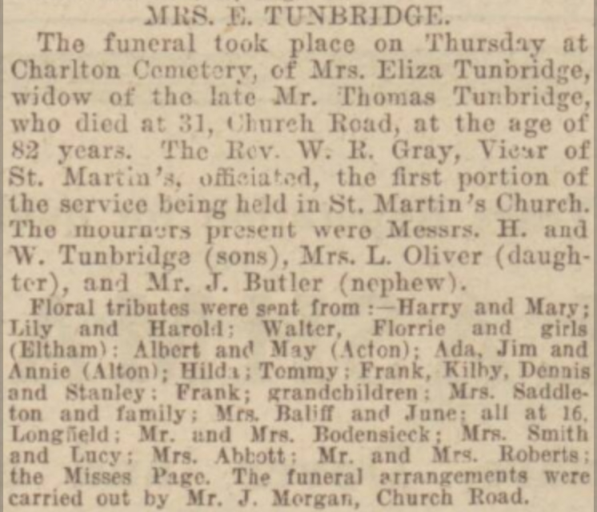

Eliza Tunbridge (née Tutt) 1847 - c1930
[ Home ] | [ Calendar ] | [ Surnames Index ] | [ Family History ]A general servant and the daughter of Edmund Tutt (a sawyer) and Caroline Page (a laundress), Eliza Tutt, the great-great-aunt of <a href="I1.html">Nigel Horne</a>, was born in Buckland, Kent, England on Sep 15, 1847<span class="citation">1,2,3,4,5,6,7,8</span>, was baptized there at St Andrew's Church on Apr 16, 1848 and married Thomas Tunbridge (a dairyman with whom she had 5 children: <a href="I353.html">Harry</a>, <a href="I352.html">Lily</a>, <a href="I355.html">Frank</a>, <a href="I356.html">Walter</a> and <a href="I354.html">Albert</a>) in St Lawrence, Thanet, Kent, England on Aug 22, 1874<span class="citation">10</span> (Jul/Aug/Sep).</p><p>Eliza spent all of her life in Kent, England. Throughout her life, she lived in several places around the county: at 40 George Street in Buckland on Mar 30, 1851<span class="citation">11</span>; at Shooter's Hill in Buckland on Apr 7, 1861<span class="citation">12</span>; in Dover in 1871<span class="citation">3</span>; in Hougham in 1881<span class="citation">4</span>; at 9 Elms Cottage, Hougham on Apr 5, 1891<span class="citation">13</span>; and on 5 Eaton Road, Dover on Mar 31, 1901<span class="citation">14</span> and on Apr 2, 1911<span class="citation">15</span>. <p>She died <i>c.</i> May 1930 in Dover, Kent<span class="citation">9</span>.
Parents
- Edmund was born c. 1819
- Caroline Bromley was born c. 1821
Children
- Harry was born on Feb 17, 1876
- Lily was born on Mar 12, 1881
- Frank was born on Oct 12, 1882
- Walter was born on Oct 16, 1884
- Albert was born on May 5, 1887
Citations
- 1851 England Census Online publication - Provo, UT, USA: The Generations Network, Inc., 2005.Original data - Census Returns of England and Wales, 1851. Kew, Surrey, England: The National Archives of the UK (TNA): Public Record Office (PRO), 1851. Data imaged from the National
- 1861 England Census Online publication - Provo, UT, USA: The Generations Network, Inc., 2005.Original data - Census Returns of England and Wales, 1861. Kew, Surrey, England: The National Archives of the UK (TNA): Public Record Office (PRO), 1861. Data imaged from the National
- 1871 England Census Online publication - Provo, UT, USA: The Generations Network, Inc., 2004.Original data - Census Returns of England and Wales, 1871. Kew, Surrey, England: The National Archives of the UK (TNA): Public Record Office (PRO), 1871. Data imaged from the National (Relation to Head of House: Servant)
- 1881 England Census Online publication - Provo, UT, USA: The Generations Network, Inc., 2004. 1881 British Isles Census Index provided by The Church of Jesus Christ of Latter-day Saints © Copyright 1999 Intellectual Reserve, Inc. All rights reserved. All use is subject to the (Relation to Head of House: Wife; Marital Status: Married)
- 1891 England Census Online publication - Provo, UT, USA: The Generations Network, Inc., 2005.Original data - Census Returns of England and Wales, 1891. Kew, Surrey, England: The National Archives of the UK (TNA): Public Record Office (PRO), 1891. Data imaged from The National
- 1901 England Census Online publication - Provo, UT, USA: The Generations Network, Inc., 2005.Original data - Census Returns of England and Wales, 1901. Kew, Surrey, England: The National Archives of the UK (TNA): Public Record Office (PRO), 1901. Data imaged from the National
- 1911 England Census Online publication - Provo, UT, USA: Ancestry.com Operations, Inc., 2011.Original data - Census Returns of England and Wales, 1911. Kew, Surrey, England: The National Archives of the UK (TNA), 1911. Data imaged from the National Archives, London, England.
- England & Wales, FreeBMD Birth Index, 1837-1915 Online publication - Provo, UT, USA: The Generations Network, Inc., 2006.Original data - General Register Office. England and Wales Civil Registration Indexes. London, England: General Register Office. © Crown copyright. Published by permission of the Cont
- England & Wales deaths 1837-2007 - Findmypast
- 1911 England Census Online publication - Provo, UT, USA: Ancestry.com Operations, Inc., 2011.Original data - Census Returns of England and Wales, 1911. Kew, Surrey, England: The National Archives of the UK (TNA), 1911. Data imaged from the National Archives, London, England.
- 1851 England, Wales & Scotland Census - Findmypast (was age 3 and the daughter of the head of the household)
- 1861 England, Wales & Scotland Census - Findmypast (was age 13 and the daughter of the head of the household)
- 1891 England, Wales & Scotland Census - Findmypast (was age 42 and the wife of the head of the household)
- 1901 England, Wales & Scotland Census - Findmypast (was age 52 and the wife of the head of the household)
- 1911 Census for England & Wales - Findmypast (was age 63 and the wife of the head of the household)
Media
Dover Express 11 April 1930

England & Wales births 1837-2006 - BMD/B/1847/3/TZ/000148/025
Kent, Canterbury Archdeaconry baptisms 1538-1912 - GBPRS/CANT/B/96232041
England & Wales marriages 1837-2008 - BMD/M/1874/3/AZ/000275/264
Kent, Canterbury Archdeaconry marriages 1538-1928 - GBPRS/CANT/M/97021870/2
England Marriages 1538-1973 - R_848394148/2
England & Wales deaths 1837-2007 - BMD/D/1930/2/AZ/000902/062
1901 England, Wales & Scotland Census - GBC/1901/0004891856
1891 England, Wales & Scotland Census - GBC/1891/0005982758
1911 Census for England & Wales - GBC/1911/RG14/04600/0325/2
1861 England, Wales & Scotland Census - GBC/1861/0003612053
England Births & Baptisms 1538-1975 - R_885823685
Family Tree

Generated by Ged2Site. Last updated on Jul 20, 2025